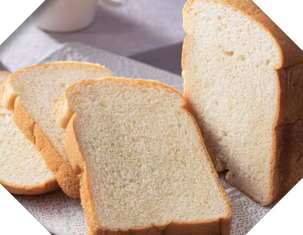

Panasonic Bistro · SD-MDX4
Machine handbook
Find a program, set up your bread maker, or look up a display message.

Programs
Coverage and open questions
Instruction manual edition · 53 PDF pages and 4,362 extracted blocks indexed. Includes 36 automatic programs, 7 dough programs and links to 78 existing instruction-manual recipe entries. The recipe book and menu sheet remain separate sources in My Bistro.
Program settings and timing come from the English extraction. The display codes were checked against the English PDF on page 51. Japanese control legends still need an original Japanese panel image. Use the linked PDF for positions, arrows and fragmented ingredient tables. Existing recipe entries retain their individual source-review status.